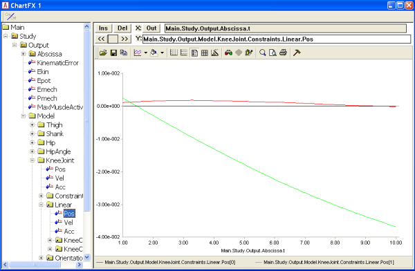
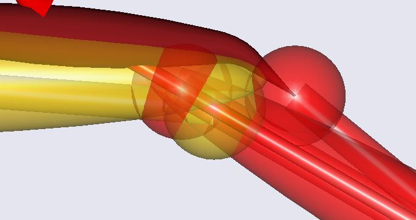
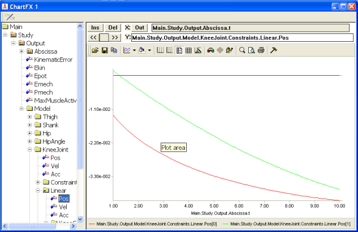
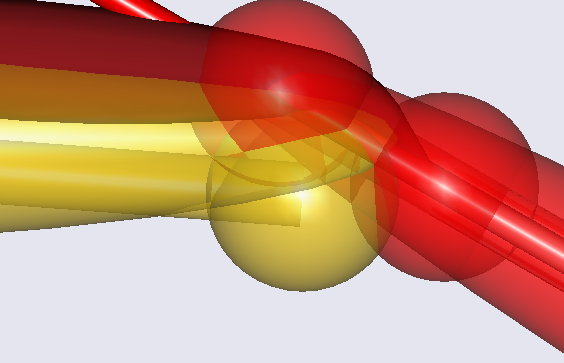

Lesson 3: Results of FDK¶
Caution
Old tutorial: This tutorial has not yet been updated to ver. 7 of the AnyBody Modeling System. Some concepts may have changed.
In this lesson we play a little around with our new FDK model and see
what kind of results we can obtain from it. If you did not manage to
obtain a working model from the previous lesson, then please download a
new one here.
After loading the model, open a Model View window, select InverseDynamics and then click the Run button. You should see the knee extending and the muscle bulging just like you saw with the baseline model. However, inside the joint, much more is now going on. We can investigate this in detail if we open a ChartFX window and browse down to the linear measure inside the joint:

The red curve is the deformation of the joint in the x direction, i.e. parallel with the tibial plateau. Despite the stiffness being smaller in this direction, the deformation is rather small. This is of course due to the muscle force acting rather perpendicularly to the tibial plateau.
The green curve symbolizes the deformation perpendicular to the tibial plateau. It reaches a value of about 4 cm, which is much more than in a real knee. This is because we defined very small stiffness values, precisely to get some large deformations to look at. If you right-click the blue condyle, select ‘Hide” from the context menu and zoom in on the joint, you can see the deformation very clearly as a penetration of the shank part of the joint into the thigh part:

Now let us try something that will create a larger shear deformation in the joint: we relocate the position of the insertion node of the quadriceps muscle on the tibia:
AnySeg Shank = {
r0 = {0.8, -0.4, 0.0};
Mass = 4;
Jii = {0.4, 0.01, 0.4}*0.4;
AnyDrawSeg drw ={
Opacity = 0.5;
RGB = {1,0,0};
};
AnyRefNode KneeCenter = {
sRel = {0.0, 0.4, 0.0};
};
AnyRefNode Quadriceps = {
sRel={0.00, 0.3, 0.0};
};
};
This moves the insertion point of the node from the surface of the tibia to centerline of the tibia as shown below:

Obviously, this causes the muscle to pull much more anteriorly on the shank. Please reload and re-run the analysis and investigate the deformations once again in the ChartFX window.

The shear deformation, symbolized by the green curve, is now comparable with the normal deformation depicted by the red curve, and once again it is easily visible if we remove the blue condyle from the Model View:

At this point, we can reflect a bit on what the FDK solver within the InverseDynamics analysis actually does. Basically, it finds equilibrium for the degrees of freedom that you have specified as ‘ForceDep’. It is static equilibrium in the sense that the solver assumes accelerations and velocities of these degrees of freedom to be zero, just like if it had been an ideal joint without motion. This assumption is fair as long as the motion of the degrees of freedom is actually small (negligible); but it is your responsibility to make sure that this is okay for your model. In the current model, it may be disputable whether it is ok, but primarily because we have worked with relatively large deformations for the sake of the example.
We may call the obtained solution a quasi-static equilibrium because it is indeed static in the direction of the force-dependent degrees of freedom, i.e. the small motions, but it retains all the motion from that large motion of the standard kinematical drivers and the thereof following inertia forces.
The FDK solver solves the equilibrium equations numerically and therefore it will leave a small residual. You can monitor this residual in the output data; in the figure below you see the curve for the error/residual (Main.Study.InverseDynamics.ForceDepKin.ForceError) for the example at hand
In this example, the error is completely insignificant and within the specified error tolerance (Main.Study.InverseDynamics.ForceDepKin.ForceTol). It can, however, become harder to reach a solution within a very fine accuracy, when models become more complicated and in particular when the stiffness is increased a lot. In other words, the solver will have difficulties when approaching the case of ideal constraints.
The solver continues with subsequent time steps, even if it does not converge within the specified tolerance. This implies that we can keep the tolerance small and subsequently inspect the time steps for which the solver fails to honor the tolerance.
In principle, this completes the introduction to AnyBody’s FDK solver in this tutorial. The FDK principle is applicable in many different situations where tissue deformations are involved, and models can of course be defined in much more realistic detail than we have seen here. In the fourth lesson of this tutorial, we shall have a look at how to use the simple surface contact force model also available in AnyBody to improve on the kinematical behavior in combination with the FDK solver.
See also
Next lesson: Lesson 4: Using Surfaces to Define the Knee Joint.
 Please report it here...
Please report it here...